library(tidyverse)
library(here)
library(rio)
linelist <- import(here("processed_data", "combined_linelist.rds"), trust = TRUE) %>%
mutate(
age_cat = fct_relevel(age_cat, "Under 18", "18-29", "30-39", "40-49",
"50-59", "60-69", "70-79", "80+", "Unknown"),
outcome = fct_relevel(outcome, "Recover", "Death", "Unknown")
)Session 7: Plotting Further — Bar Charts, Colors, Epicurves, and Facets
Bar charts of counts and values, choosing colors, epidemic curves, facets, and saving plots
NoteIn this session you will learn to
- Make bar charts of counts (
geom_bar()) and of values you calculated (geom_col()) - Order bars sensibly and choose stacked, side-by-side, or 100% bars
- Choose colors on purpose with
scale_fill_manual() - Make an epidemic curve from dates
- Split a plot into small multiples with
facet_wrap() - Save plots to files with
ggsave()
Before you start: open the workshop folder in Positron (File → Open Folder…) and open student_scripts/Session 7 - Plotting Further_STUDENT.R. This session starts from processed_data/combined_linelist.rds and processed_data/measles_final.rds, the files you made in Session 3. Missed a session? Ready-made copies are already in processed_data/.
Part 1: Set up
Load the packages, import the finished linelist, and put the categories in a sensible order (the same as Session 6):
TipSave your colors once
Saving your colors in a named vector means every plot uses the same color for the same category:
vacc_colors <- c("Yes" = "#2a78d6", "No" = "#eb6834", "Unknown" = "#9a9a95")
You will use these colors in Part 4.
Part 2: Bar charts of counts: geom_bar()
geom_bar() counts the rows in each category for you — you only give it x.
ggplot(data = linelist, mapping = aes(x = hospital_name)) +
geom_bar()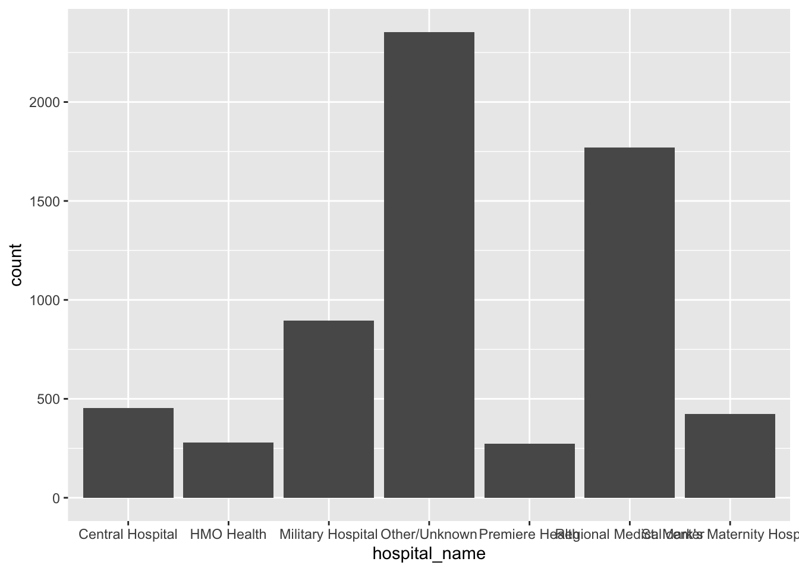
The labels overlap. Put the categories on the y-axis instead to get horizontal bars:
ggplot(data = linelist, mapping = aes(y = hospital_name)) +
geom_bar()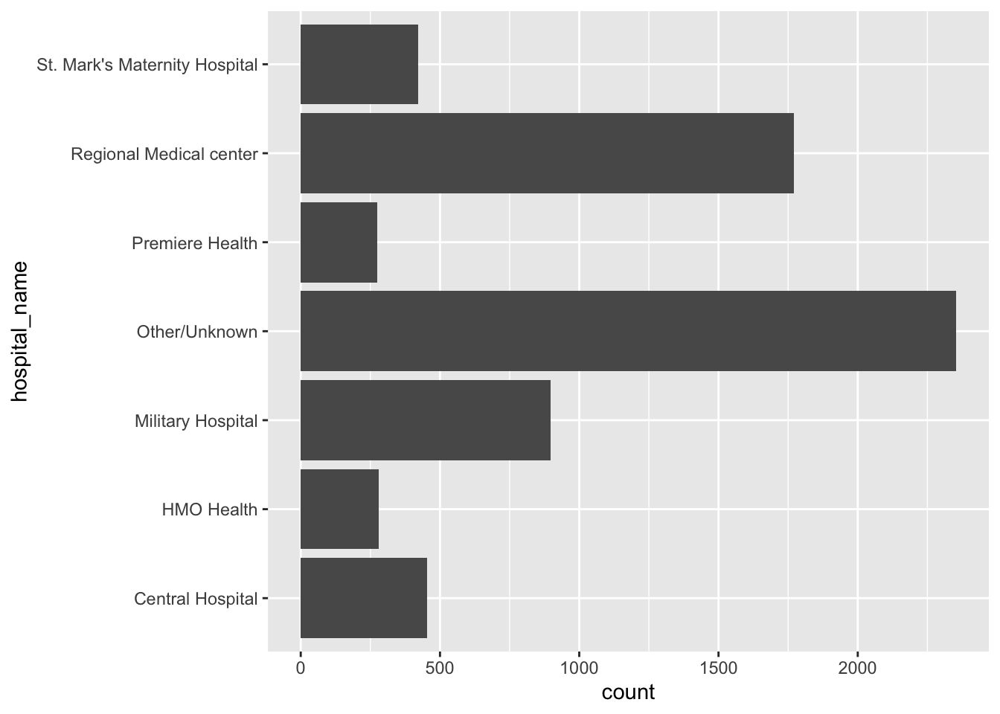
Order the bars
Alphabetical order rarely helps. fct_infreq() orders by count (most common first), and fct_rev() flips it so the longest bar is at the top:
ggplot(data = linelist, mapping = aes(y = fct_rev(fct_infreq(hospital_name)))) +
geom_bar(fill = "#2a78d6") +
labs(title = "Cases by hospital", x = "Number of cases", y = NULL) +
theme_minimal()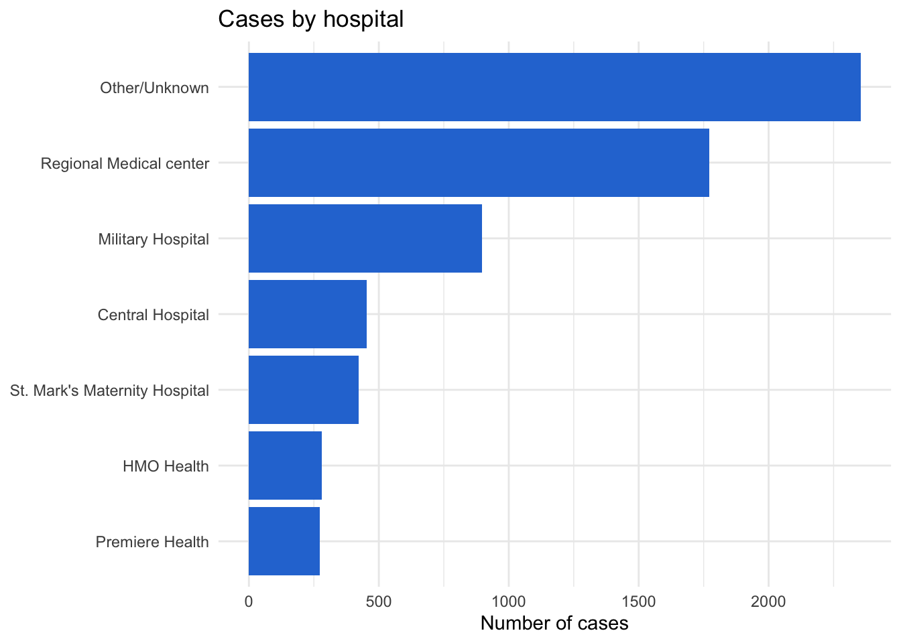
y = NULL removes an axis title the reader doesn’t need.
Fill by a second variable
Map fill to split each bar. The position argument controls how the pieces are arranged:
# "stack" (the default): counts, stacked
ggplot(data = linelist, mapping = aes(x = age_cat, fill = outcome)) +
geom_bar(position = "stack")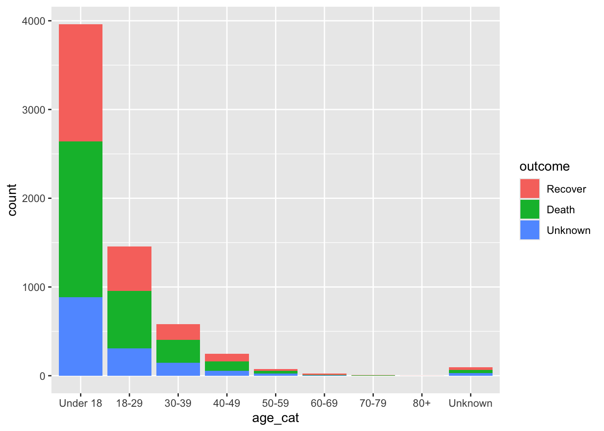
# "fill": every bar is 100% — compares PROPORTIONS across groups
ggplot(data = linelist, mapping = aes(x = age_cat, fill = outcome)) +
geom_bar(position = "fill")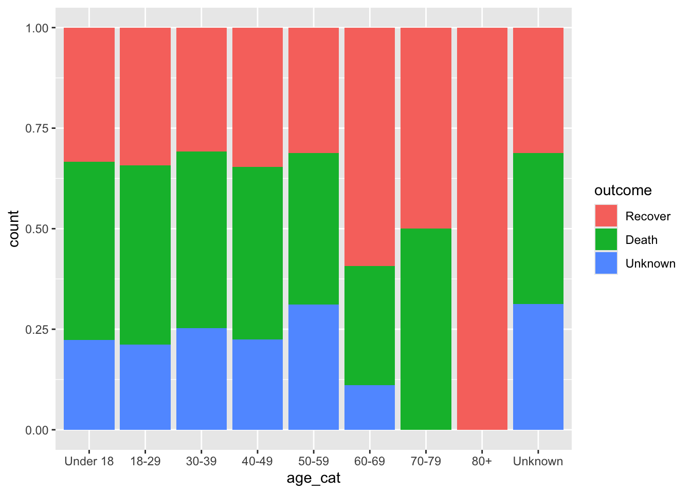
# "dodge": side by side — compares COUNTS within each group
ggplot(data = linelist, mapping = aes(x = age_cat, fill = outcome)) +
geom_bar(position = "dodge")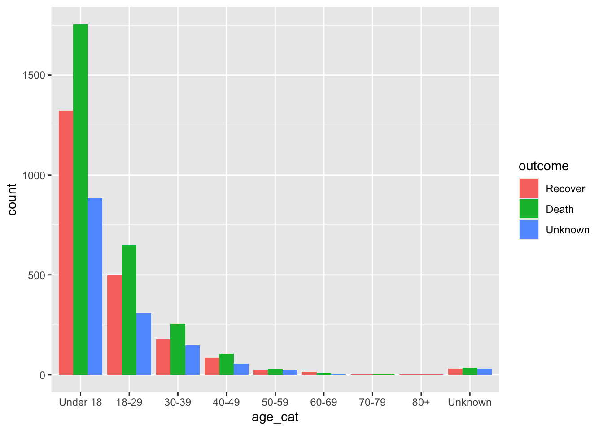
Part 3: Bar charts of values: geom_col()
When you have already calculated the numbers (with count() or summarise() from Session 5), use geom_col() and give it both x and y:
death_by_age <- linelist %>%
filter(outcome != "Unknown", age_cat != "Unknown") %>%
group_by(age_cat) %>%
summarise(
n = n(),
pct_death = mean(outcome == "Death") * 100
)
death_by_age# A tibble: 8 × 3
age_cat n pct_death
<fct> <int> <dbl>
1 Under 18 3077 57.0
2 18-29 1146 56.5
3 30-39 435 58.9
4 40-49 190 55.3
5 50-59 53 54.7
6 60-69 24 33.3
7 70-79 6 50
8 80+ 1 0 ggplot(data = death_by_age, mapping = aes(x = age_cat, y = pct_death)) +
geom_col(fill = "#2a78d6") +
labs(title = "Case fatality by age group", x = "Age group", y = "Deaths (% of cases)") +
theme_minimal()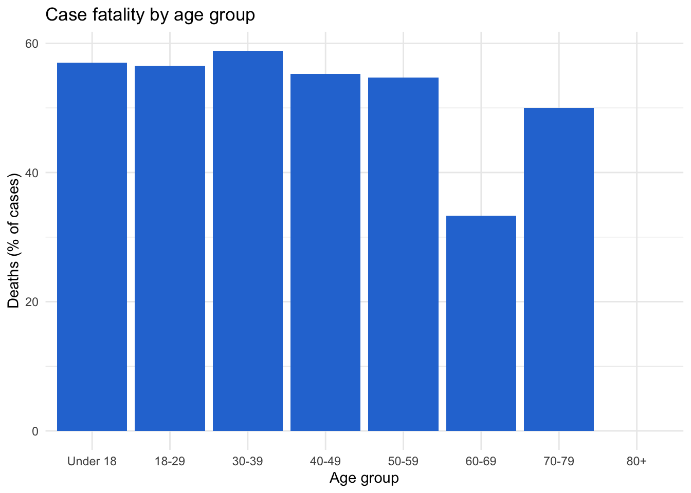
Note
geom_bar() or geom_col()?
geom_bar() counts rows for you (one row per patient): give it x only. geom_col() draws numbers you already have (one row per bar): give it x and y.
fct_reorder(CATEGORY, NUMBER) sorts the bars by the number.
Part 4: Choosing colors
ggplot’s default colors are fine for exploring, but for a report choose colors on purpose:
- Use colors that people with color-vision deficiency can tell apart. Avoid red vs green (the most common problem pair) and two shades of the same color. Blue (
#2a78d6) and orange (#eb6834) are a safe pair - Give “Unknown” or “Other” a gray (
#9a9a95), so it doesn’t compete with the real categories - Keep the same color for the same category in every plot of a report
scale_fill_manual() (for fill) and scale_color_manual() (for color) set the colors by name:
outcome_colors <- c("Recover" = "#2a78d6", "Death" = "#eb6834", "Unknown" = "#9a9a95")
ggplot(data = linelist, mapping = aes(x = age_cat, fill = outcome)) +
geom_bar(position = "fill", color = "white") +
scale_fill_manual(values = outcome_colors) +
scale_y_continuous(labels = scales::percent) +
labs(
title = "Outcome by age group",
x = "Age group",
y = "Percent of cases",
fill = "Outcome"
) +
theme_minimal()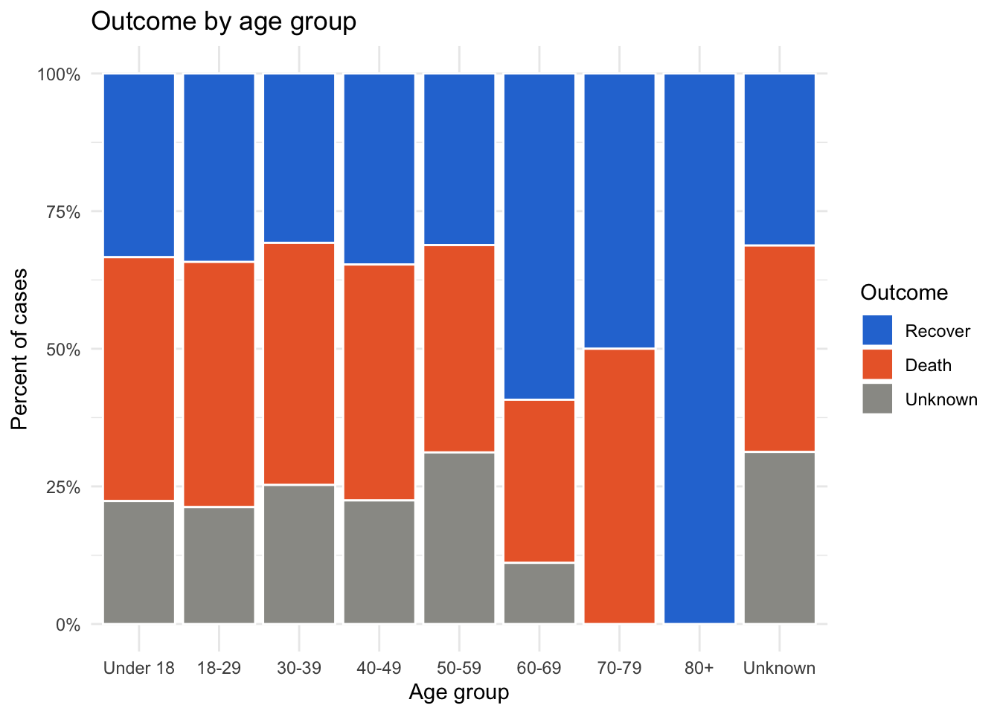
- Saving the colors as
outcome_colorslets you reuse them in every plot color = "white"draws a thin white line between the segmentsscale_y_continuous(labels = scales::percent)shows 0.25 as 25%
TipNeed more colors?
The viridis scales are built into ggplot2 and are colorblind-friendly: try scale_fill_viridis_d() for categories.
Rotate long labels
If you keep labels on the x-axis, rotate them so they don’t overlap:
ggplot(data = linelist, mapping = aes(x = hospital_name)) +
geom_bar(fill = "#2a78d6") +
theme_minimal() +
theme(axis.text.x = element_text(angle = 45, hjust = 1))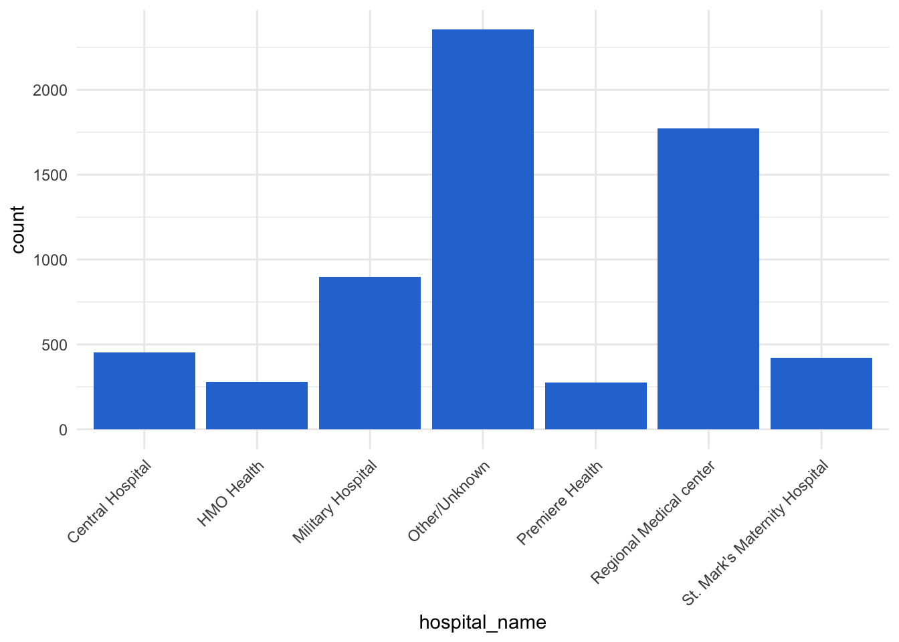
Part 5: Epidemic curves
An epidemic curve (epicurve) shows the number of new cases over time — the most important plot in outbreak investigation. It is a histogram of a date column:
ggplot(data = linelist, mapping = aes(x = onset_date)) +
geom_histogram(binwidth = 7, fill = "#2a78d6", color = "white")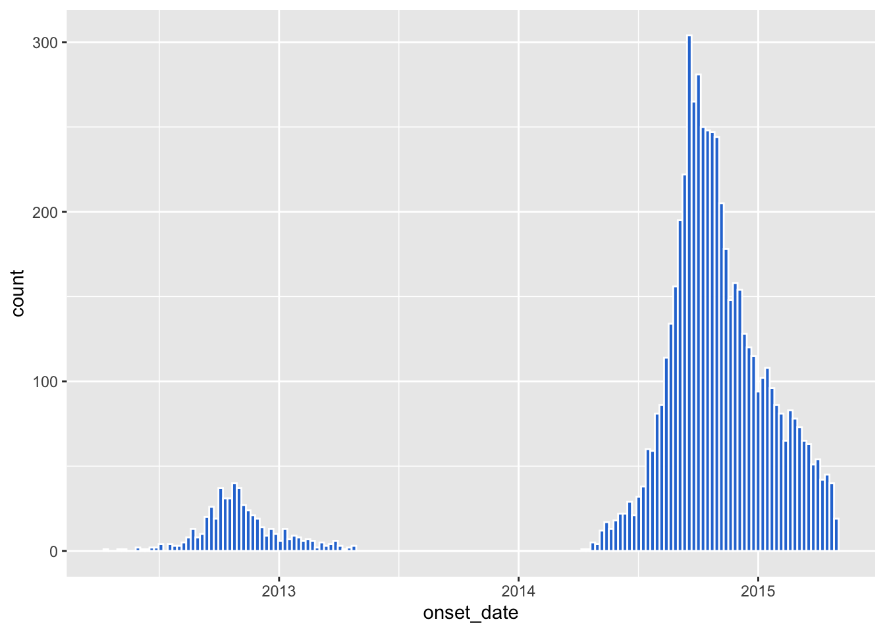
binwidth = 7 makes each bar one week.
Zoom in on the outbreak and format the date axis:
linelist %>%
filter(onset_date >= as.Date("2014-01-01")) %>%
ggplot(mapping = aes(x = onset_date)) +
geom_histogram(binwidth = 7, fill = "#2a78d6", color = "white") +
scale_x_date(date_breaks = "2 months", date_labels = "%b\n%Y") +
labs(
title = "Epidemic curve: weekly cases by date of symptom onset",
subtitle = "Onset dates from 2014 onward",
x = "Week of onset",
y = "Number of cases"
) +
theme_minimal()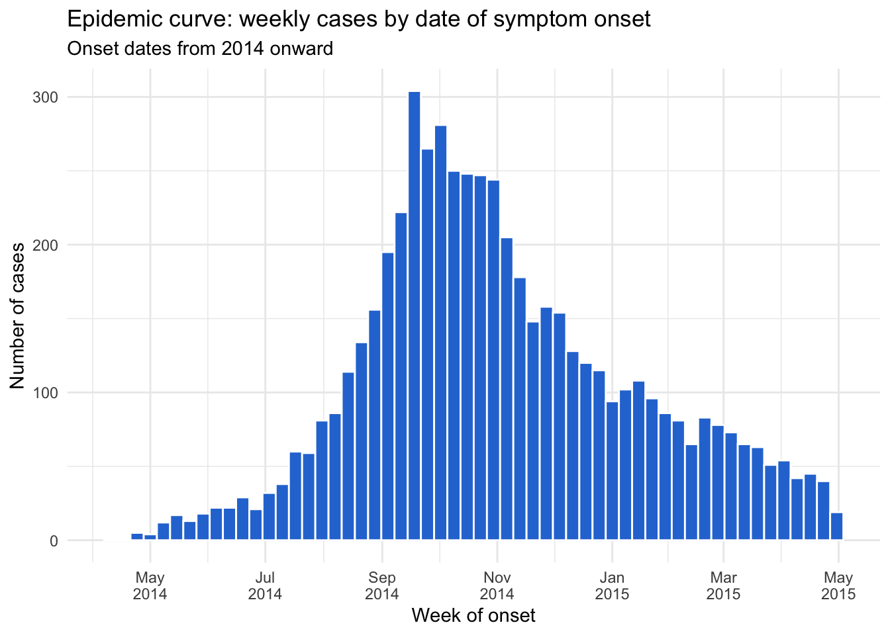
date_breaks = "2 months"puts a label every two monthsdate_labels = "%b\n%Y"shows the short month name, a line break, and the year (%d= day,%B= full month name)
Epicurve by outcome
linelist %>%
filter(onset_date >= as.Date("2014-01-01")) %>%
ggplot(mapping = aes(x = onset_date, fill = outcome)) +
geom_histogram(binwidth = 7, color = "white") +
scale_fill_manual(values = outcome_colors) +
scale_x_date(date_breaks = "2 months", date_labels = "%b\n%Y") +
labs(x = "Week of onset", y = "Number of cases", fill = "Outcome") +
theme_minimal()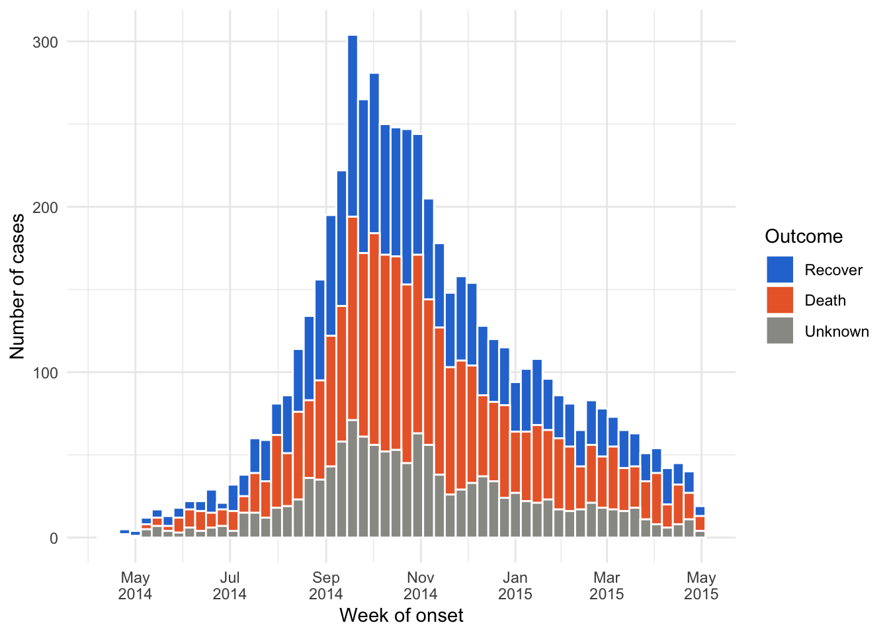
Part 6: Facets
facet_wrap() splits one plot into small multiples — one panel per category, all with the same axes so they are easy to compare:
linelist %>%
filter(onset_date >= as.Date("2014-01-01"), hospital_name != "Other/Unknown") %>%
ggplot(mapping = aes(x = onset_date)) +
geom_histogram(binwidth = 7, fill = "#2a78d6", color = "white") +
facet_wrap(~ hospital_name) +
scale_x_date(date_breaks = "4 months", date_labels = "%b\n%Y") +
labs(title = "Weekly cases by hospital", x = "Week of onset", y = "Number of cases") +
theme_minimal()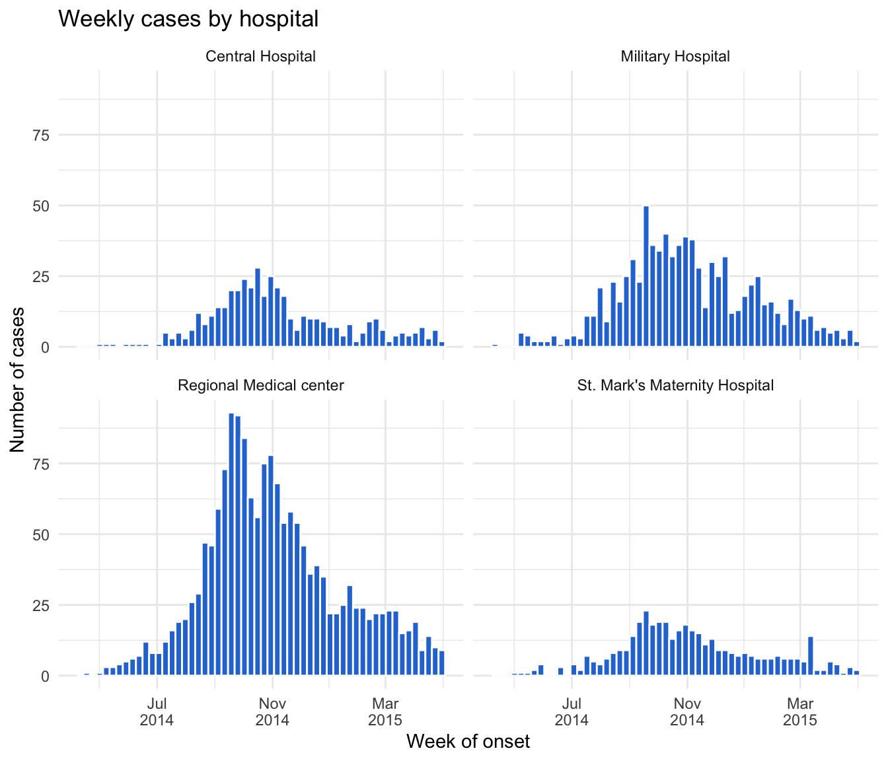
Facets work with any plot:
linelist %>%
filter(gender != "Unknown") %>%
ggplot(mapping = aes(x = age_years)) +
geom_histogram(binwidth = 5, fill = "#2a78d6", color = "white") +
facet_wrap(~ gender) +
labs(title = "Age distribution by gender", x = "Age (years)", y = "Number of cases") +
theme_minimal()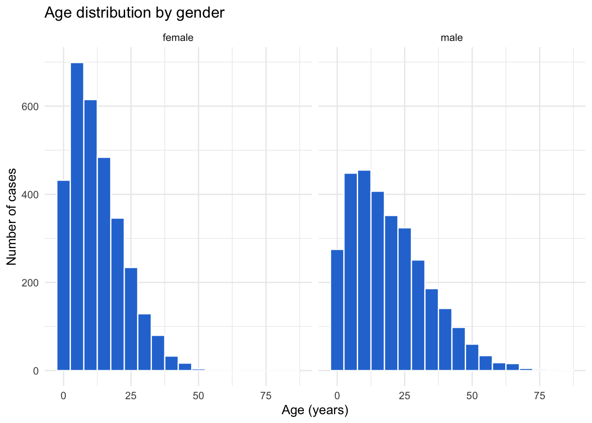
Note
facet_wrap(~ hospital_name, ncol = 2)sets the number of columnsfacet_wrap(~ hospital_name, scales = "free_y")lets each panel have its own y-axis (careful: it makes panels harder to compare)facet_grid(gender ~ outcome)makes a grid with one variable for rows and one for columns
Part 7: Saving plots
ggsave() saves the last plot you made, or a plot object you name. Save the plot as an object first:
epicurve <- linelist %>%
filter(onset_date >= as.Date("2014-01-01")) %>%
ggplot(mapping = aes(x = onset_date)) +
geom_histogram(binwidth = 7, fill = "#2a78d6", color = "white") +
labs(title = "Weekly cases", x = "Week of onset", y = "Number of cases") +
theme_minimal()Then save it to the outputs/ folder:
ggsave(here("outputs", "epicurve.png"), plot = epicurve,
width = 8, height = 5, dpi = 300)- The file type comes from the extension:
.pngfor slides and documents,.pdffor print widthandheightare in inches;dpi = 300is print quality- Save plots in their own folder (here,
outputs/) so they don’t get mixed up with data
Tip⭐ Bonus
- Make a bar chart of the percentage of measles cases who died in each age group (
summarise()first, thengeom_col()). - Try
scale_fill_viridis_d()instead ofscale_fill_manual()on one of your plots. - Brought your own data? Make a bar chart, a plot over time (if you have dates), and a faceted plot, and save one of them with
ggsave().
See the solutions file for the code.
Extra: box plots with summary labels (optional)
This optional, advanced example calculates the median and quartiles for each group with summarise(), turns them into text, and adds them to the plot with geom_text() — combining Sessions 4, 5, and 6.
# 1. Summary statistics for each gender and outcome
box_stats <- linelist %>%
filter(gender != "Unknown", outcome != "Unknown") %>%
group_by(gender, outcome) %>%
summarise(
median = median(age_years, na.rm = TRUE),
q1 = quantile(age_years, 0.25, na.rm = TRUE),
q3 = quantile(age_years, 0.75, na.rm = TRUE),
.groups = "drop"
) %>%
mutate(label = paste0("Median: ", round(median, 1), "\n",
"Q1: ", round(q1, 1), "\n",
"Q3: ", round(q3, 1)))
# 2. The plot, with the labels placed beside each box
linelist %>%
filter(gender != "Unknown", outcome != "Unknown") %>%
ggplot(mapping = aes(x = gender, y = age_years)) +
geom_boxplot(fill = "#2a78d6", alpha = 0.3, width = 0.35) +
geom_text(
data = box_stats,
mapping = aes(x = gender, y = q3, label = label),
nudge_x = 0.22, hjust = 0, vjust = 0, size = 2.8, color = "gray30"
) +
facet_wrap(~ outcome) +
scale_x_discrete(expand = expansion(add = c(0.4, 0.9))) + # room on the right for the labels
labs(
title = "Age distribution by gender and outcome",
subtitle = "Labels show the median and quartiles",
x = "Gender",
y = "Age (years)"
) +
theme_minimal()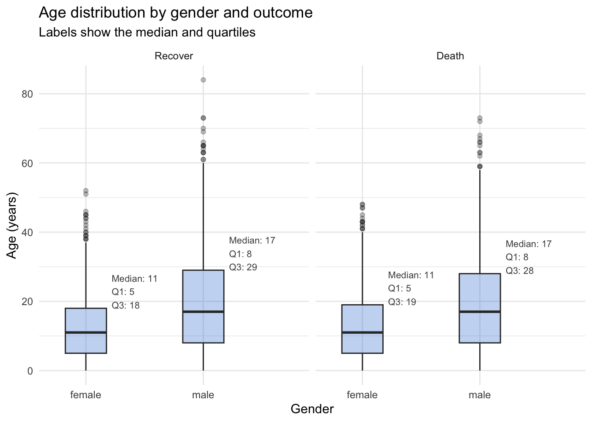
Key points
geom_bar()counts rows for you;geom_col()draws numbers you already calculated.- Order bars with
fct_infreq()/fct_reorder(), and use horizontal bars (aes(y = ...)) for long labels. position = "stack","fill"(100%, compares proportions), or"dodge"(side by side, compares counts).- Choose colors on purpose: colorblind-safe pairs (not red vs green), gray for “Unknown”, and a named color vector with
scale_fill_manual()so each category keeps its color. - An epicurve is a weekly histogram of a date column; format the axis with
scale_x_date(). Look at the whole date range first — plots reveal data errors. facet_wrap(~ COLUMN)makes small multiples with shared axes.- Save a plot as an object, then
ggsave(here("outputs", "file.png"), plot = ..., width, height, dpi).
Next: Session 8 — Programming (optional). Write your own functions, use if/else, and loop over groups — for example, to save one epidemic curve per hospital automatically.